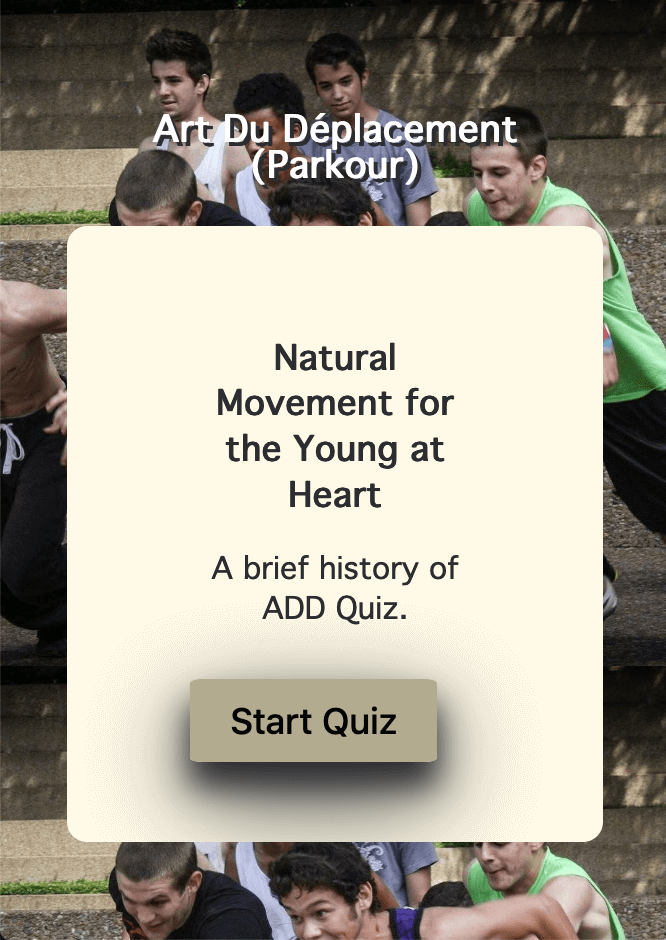

Full-Stack Developer Portfolio
UI/UX Focused with a passion for User Experience Optimization

ADD Quiz App
Project description (keep it to one paragraph) - This quiz app was designed to give someone unfamiliar with ADD a quick history of the discipline focused on the founders, and references in current culture.
The quiz app uses Semantic HTML, CSS, and JavaScript.
Project Links
- Link to Repo
- Link to live site
- Git hub